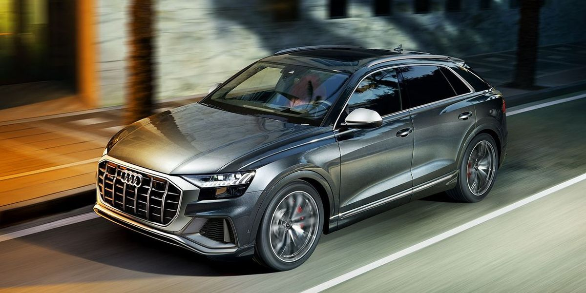

This photo is shown as an element with relative parameters
This photo is shown as an element with absolute parameters

This pictur have a jpg format
This pictur have a svg format
This picture is a link to page
Both photos are positioning on the right side